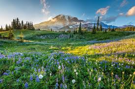
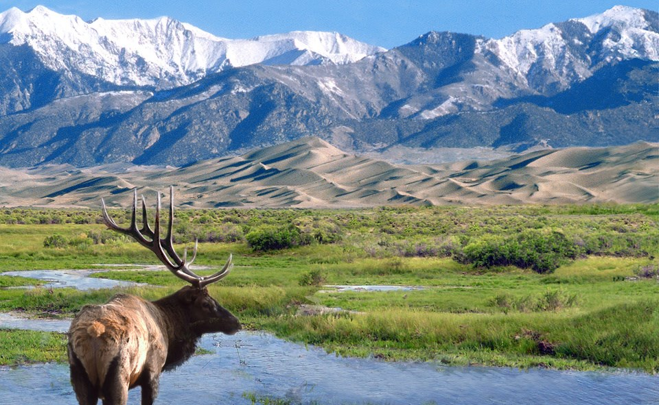

Ten Best of Everything: National Parks - Epic Backpacking Trips
Show Facts
x Would you like to sign up for our newsletter?
Please register for our site.


Yosemite National Park
-
215-mile John Muir Trail
- ties in the Ansel Adams Wilderness and Sequoia & Kings Canyon National Parks
- route follows the Sierra Nevada
- scale over, around or near legendary sites such as subalpine Tuolumne Meadows, Merced River, Half Dome, Cathedral Lake and the Lyell Canyon
- see creeks and peaks, butterflies and waterfalls, cascading rivers, narrow canyons, grouse, deer, bear and lakes.
Rocky Mountain National Park
-
40-mile Colorado Grand Loop
- traverses the continental divide
- bird's eye view of the American West
- panoramas of wildflowers, purple mountains and the occasional elk
- the rare cross country hike that will only take a week
Grand Canyon National Park
-
34-mile Royal Arch Loop
Mount Rainier National Park
-
93-mile Wonderland Trail
Glen Canyon National Recreation Area
-
30-mile Rainbow Trail
- requires a permit issued from the Navajo Nation Parks & Recreation Department
- winds around the footprint of Navajo Mountain
- offers oportunity to camp beside Rainbow Bridge, the world's largest natural bridge
Chesapeake & Ohio Canal National Historical Park
-
184-mile Towpath
Canyonlands National Park
-
<
>7-20 mile Trails:
- Sky
- Needles
- Maze Districts
Appalachian National Scenic Trail
-
2,175-miles Maine to Georgia
Wrangell-St. Elias National Park & Preserve
-
48-mile Tebay Lakes to Bremmer
Voyageurs National Park
-
30-mile Kab-Ash Trail